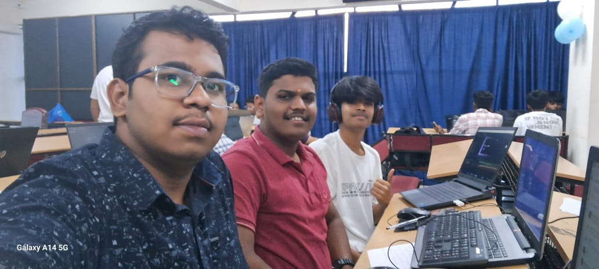
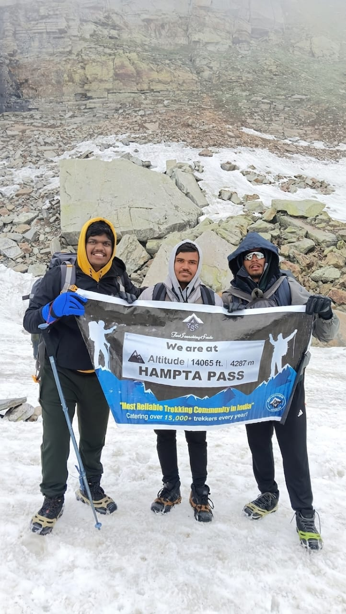
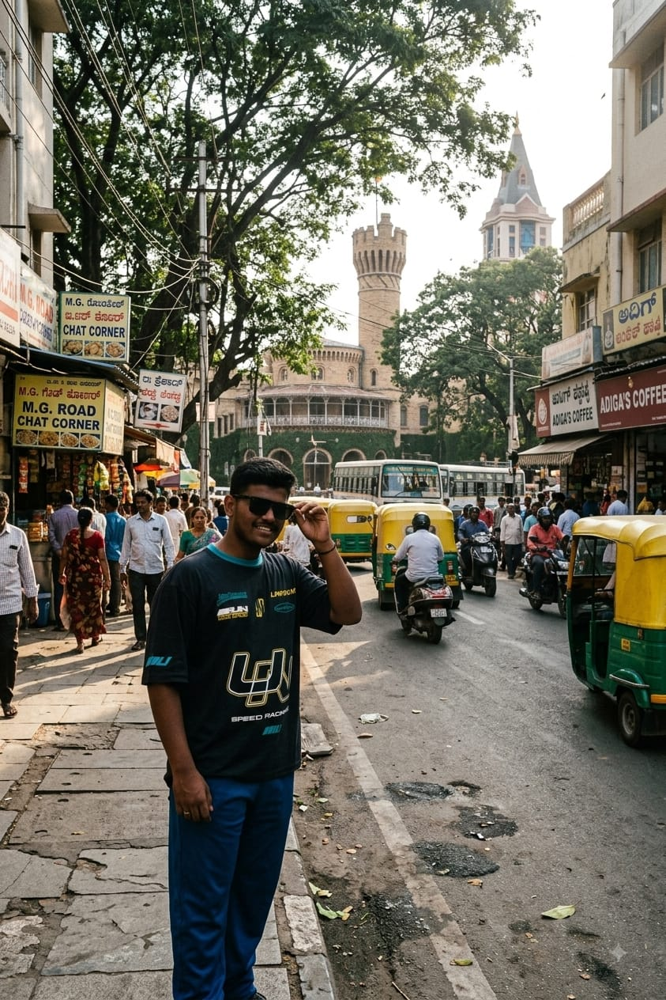

HACKNOVA 1.0
Built a resume website with a student team, competing alongside engineering students and receiving special recognition from the judges.
Satwik Kattimani
B.Tech CSE Student
Presidency University · Bangalore
A journey in progress · 2026
From Hubli to Bangalore, from school hackathons to Himalayan trails—a record of what I am learning by stepping into unfamiliar places.
Scroll to follow the story
I am not trying to present a finished version of myself. I am still learning what I enjoy building, what kind of problems hold my attention, and how I respond when I am out of my depth.
Moving cities, entering engineering, joining a hackathon, and trekking in the Himalayas have all taught me the same thing in different ways: growth usually starts before confidence arrives.
For now, I am trying to notice more, ask better questions, and keep making small attempts that eventually become something bigger.
The story starts before the code.
The Journey
Somewhere between curiosity and commitment, the direction started becoming clearer.
Growing up in Hubli gave me space to be curious. Technology first felt like something I used; slowly, it became something I wanted to understand and create.
Joined a school-student team building a resume website in a room full of engineering students—and left with special recognition from the judges.

A trek through the Himalayas that made discomfort less abstract and persistence much more physical.

Leaving Hubli for Bangalore changed the scale of what felt possible. New people, ideas, campuses, companies, and conversations made the world feel larger—and made me want to understand my place in it.

Learning computer science fundamentals while trying to connect classroom concepts with the real world outside it.
Learning the foundations properly — programming, problem solving, systems, and the ideas behind the technology I use every day.
Starting with small experiments and gradually learning how ideas become products, tools, and solutions.
Exploring businesses, markets, capital, and how technology influences the way the world creates value.
Following technology, geopolitics, and human behaviour to understand the forces shaping the future.
I don't have all the answers yet. I'm more interested in finding problems worth solving, learning what it takes to solve them, and building from there.
Tools that make complicated things simpler, especially where technology meets everyday problems.
Products that help people understand money, markets, businesses, and opportunities with more clarity.
Small experiments, strange questions, and eventually — things useful enough to become real products.
A few attempts so far. Some worked, some didn't. All of them taught me something.
Built a resume website with a student team, competing alongside engineering students and receiving special recognition from the judges.
Small experiments are where I'm learning to turn ideas into something that actually works.
Building more, learning faster, and gradually turning curiosity into things other people can actually use.
Let's see where this goes